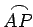

Kettenlinie oder Katenoide nennt man eine Kurve, in der folgenden Abbildung blau gezeichnet, die von einem homogenen, nicht dehnbaren und an beiden Enden aufgehängten Faden gebildet wird.
Die Gleichung der Katenoide lautet:
Der Parameter a bestimmt den Scheitelpunkt A bei . Die Kurve verläuft symmetrisch zur y-Achse, und zwar höher als die Parabel die in der Abbildung rot dargestellt ist.
Die Länge L des Bogens  beträgt .
Die Fläche OAPM hat den Wert .
Der Krümmungsradius beträgt
Die Katenoide ist die Evolute der Traktrix.
Die Traktrix ist ihrerseits die Evolvente der Katenoide mit dem Scheitelpunkt A bei